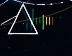
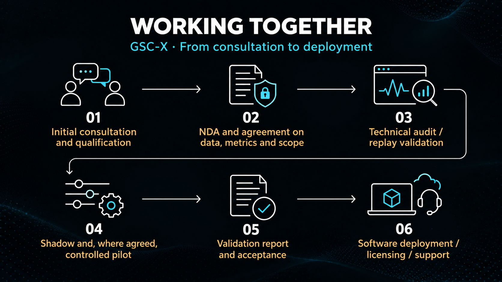

Measurable value for your operations
The GSC-X Executive Kernel is a software algorithm for predictive monitoring, decision support and adaptive stabilization. It helps identify instability before it develops into downtime, energy loss, equipment degradation or operational failure.
The technology is supported by public benchmarks, validation reports, scientific datasets and reproducible research across engineering, infrastructure and scientific domains. Value for each customer is evaluated separately against their existing baseline and agreed metrics.
Technical stability audit
Identify hidden instability and evaluate improvement potential using your own data. The audit runs offline or by replaying historical telemetry, without intervening in machine control.
- Reproduction of the current baseline and comparison with GSC-X
- Evaluation of stability, risks, recovery reserve and agreed KPIs
- Technical report with results, limitations and a GO / NO-GO recommendation
- Proposed integration path and next steps
If the GSC-X audit does not demonstrate measurable value against the criteria agreed in advance, the customer pays no audit fee.
The terms specify the data, baseline, metrics and success criteria. The cost of a successful audit may be credited towards an agreed subsequent pilot.
Replay validation and digital twins
Evaluate engineering decisions before deployment. Historical records, digital twins and what-if scenarios allow control strategies to be compared, fault responses to be assessed and costs and operating reserves to be evaluated.
The output is a reproducible comparison with the baseline, documented scenarios and recommendations for further evaluation.
Pilot projects
A pilot brings audit findings into the customer environment. It can begin in shadow mode: GSC-X receives live or near-live telemetry, predicts and recommends, but does not control the process. A controlled pilot proceeds only within agreed boundaries and explicitly approved permissions.
- Reduced downtime and improved equipment availability
- Higher productivity and lower energy consumption
- Earlier recognition of degradation and better maintenance decisions
- Evaluation of data quality, false alarms, robustness and integration interfaces
Specific objectives, metrics and acceptance tests are defined in advance. Safety layers and customer-approved protections remain active.
Technology evaluation and technical consulting
We evaluate the Executive Kernel using your data or test environment. We support integration design, predictive diagnostics, reliability engineering, digital-twin validation and executive decision architecture.
The scope may also include performance optimization, domain-specific telemetry mapping and reproducible test preparation.
Software delivery and integration
Our services are software-based and delivered primarily remotely. We provide software, configuration, interfaces, documentation, test procedures and remote support. Local installation and connection to existing infrastructure are performed by the customer or their authorized IT or automation team.
GDS Control Systems is a product family built around GSC-X Core. Its architecture is defined; a standardized deployable V1 package is a development milestone. Initial customer evaluations are delivered through clearly scoped audit and pilot packages.
No vendor lock-in. No mandatory infrastructure replacement.
Indicative pricing
Final pricing is agreed according to scope, complexity, system criticality, data readiness and validation requirements. The figures below provide an initial budgeting guide rather than a fixed price list.
| Service | Standard projects | Energy / critical infrastructure | Fusion / nuclear / major institutions |
|---|---|---|---|
| Technical audit | from €5,000 | €15,000–30,000+ | from €25,000 |
| Pilot project | €25,000–50,000+ | €75,000–150,000+ | €100,000–250,000+ |
| Software deployment | €25,000–150,000+ | from €100,000 | By agreement |
Selected early-stage projects in the Czech market: technical audit from approximately CZK 70,000; pilot approximately CZK 350,000–500,000 and above, depending on scope.
Standard projects primarily cover industrial automation, robotics, reliability, batteries and digital infrastructure. Deployment figures refer indicatively to one system or line. “+” indicates that prices may be higher depending on requirements; larger projects are quoted individually.
Licensing: by agreement according to value, scope and deployment rights. Support: indicatively 10–20% of the licence or deployment value annually for standard projects; critical systems are quoted according to the agreed support level. Hardware is outside the standard software scope.
Spectral Observatory

— a strategic technology opportunityA standalone scientific and technological branch of the GSC-X ecosystem focuses on autonomous astronomical spectral analysis, large-scale observational data processing and the identification of scientifically relevant candidates.
We welcome discussions about licensing, strategic research or commercial partnerships, integration into scientific infrastructure, joint development or full technology transfer including related know-how. Scope, rights and further validation requirements are defined for each collaboration.
Licensing and partnerships
Licensing follows demonstrated value and can cover a machine, line, site, fleet, application or enterprise environment. Support, updates, expansion and any exclusivity are agreed separately.
Filed patent applications: GSC-F — PV 2026-216; GSC-S — PV 2026-236; GSC-C — PV 2026-241; GSC-X — PV 2026-242.
Return on investment
The objective is to demonstrate measurable operational improvements whose economic value exceeds the investment in technical evaluation, pilot validation and deployment planning. We assess downtime, energy consumption, productivity, maintenance, equipment lifetime and operational resilience.
Return estimates use customer data and agreed assumptions. Specific savings are not promised before the project has been scoped and evaluated.

Start with a specific problem, the telemetry available and what measurable improvement means for your organization.